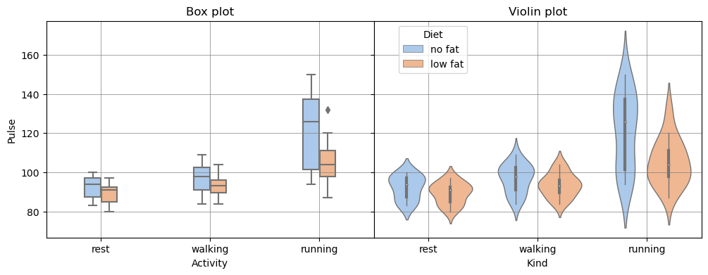

| Probability theory | Statistics |
|---|---|
| Stochastic processes: This subfield deals with the study of random processes that evolve over time. Examples include random walks, Brownian motion, and Markov processes. | Descriptive statistics: This subfield deals with the organisation, summarisation, and graphical representation of data, such as mean, median, mode, standard deviation, and histograms. |
| Information theory: This subfield deals with the quantification and transmission of information in the presence of noise and uncertainty. Key concepts include entropy, mutual information, and channel capacity. | Inferential statistics: This subfield deals with making inferences about a population based on a sample of data, using tools such as hypothesis testing, confidence intervals, and regression analysis. |
| Probability distributions: This subfield deals with the study of probability distributions, which describe the probabilities of different outcomes in a random variable. | Experimental design: This subfield deals with the planning and analysis of controlled experiments, including randomisation, blocking, and factorial designs. |
| Random matrix theory: This subfield deals with the study of matrices with random elements. It has applications in physics, engineering and other fields. | Time series analysis: This subfield deals with the modeling and analysis of data that vary over time, such as stock prices, weather patterns and economic indicators. |
About this series
This is an article from the series about statistics (and probability theory). The motivation behind this series is to retain knowledge while taking courses, reading books and articles. I write articles about something that I missed before, found interesting or possibly useful to me in the future. These articles do not constitute a course, they are just a collection of my personal study notes or summaries on different topics related to statistics.
Statistics and probability theory
Typically, probability theory and statistics go side by side in the curriculum, so students do not always understand the difference between the subjects. Indeed, we constantly use them together, then why do we need to separate them at all?
Some prefer to explain the difference through model and data:
- In probability theory, we take a model (e.g. fair coin) and predict how likely it is to get some event with this model (e.g. tails 5 times in a row).
- In statistics, we take data (e.g. number of heads and tails in 100 tosses) and infer what is the model behind this data (e.g. biased coin).
This may give the impression that probability theory and statistics solve problems that are inverse to each other. But this is not exactly the case.
Probability theory is the branch of mathematics that deals with the study of randomness, uncertainty, and the likelihood of events occurring. The key concepts in probability theory include events and random variables, probability laws and probability distributions.
Statistics is the branch of mathematics that deals with collecting, analysing, and interpreting data. It involves the use of mathematical and computational tools to not only make inferences from data, but also to test hypotheses and predict future events. Statistics provides ways to design efficient experiments that eliminate time-consuming trial and error. Key concepts of statistics include data, variability, confidence intervals, sampling, inference.
So they deal with completely different problems and use different methods and tools.
Nevertheless, statistics and probability theory are closely related fields, with some subjects tightly connected. For example, Bayesian statistics.
Bayesian statistics is considered a subfield of probability theory because it uses probability theory to model and quantify uncertainty in statistical inference. In contrast to traditional frequentist statistics, which assumes that probabilities are based on frequencies of events in long-run experiments, Bayesian statistics assigns probabilities to events based on prior knowledge and data.
In Bayesian statistics, prior beliefs about the probability of an event are combined with new data to update the probability estimates. The resulting probability distribution is then used to make statistical inferences and predictions. Bayesian statistics also allows for the incorporation of expert knowledge and subjective opinions into the analysis.
In what follows, I will explore some topics in statistics and probability theory in order to close the gaps left after my university studies and to better understand both these fields.
Descriptive statistics
People prefer to look at pictures or figures rather than at numbers.
The two most important functions of descriptive statistics:
- communicate information
- support reasoning about data
Choosing an appropriate representation, the first thing you need to look at is whether your data is categorical or numerical.
Categorical (qualitative) data
Categorical data usually represents data divided into groups (or categories) and can be visualised using a pie chart and dot plot.
Code
# Data from: https://www.statista.com/statistics/301726/mayonnaise-usage-frequency-in-the-uk/
import matplotlib.pyplot as plt
import matplotlib.cm as cm
import pandas as pd
import numpy as np
def dot_plot(ax, x_values, y_values, color):
ax.plot(
x_values,
y_values,
marker='$\\bigoplus$',
markersize=12,
linestyle='None',
color=color
)
def set_axis(ax, title, xlabel):
ax.set_xlabel(xlabel)
ax.set_title(title)
ax.set_axisbelow(True)
ax.grid(which='major', linestyle='-', linewidth='0.5', color='grey')
ax.minorticks_on()
ax.grid(which='minor', linestyle=':', linewidth='0.5', color='grey')
# data
mayonnaise_consumption = pd.DataFrame({
'Group': [
'Never', 'Less than \nonce a week', 'Once a week', '2-3 times \na week', 'Once a day \nor more'
],
'Number': [798250, 6575180, 4471460, 6506960, 1503030]
})
total_people = sum(mayonnaise_consumption['Number'])
# Prepare subplots
fig, (ax1, ax2, ax3) = plt.subplots(1, 3, figsize=(13, 3), gridspec_kw={'width_ratios': [3, 1, 2]}, num='dot_plot')
fig.suptitle('Mayonnaise usage frequency in the UK (2021)', fontsize=14)
fig.subplots_adjust(top=0.8)
# Pie chart
wedges, texts, autotexts = ax1.pie(
mayonnaise_consumption['Number'],
autopct='%1.1f%%',
textprops=dict(color='w')
)
plt.setp(autotexts, size=12, weight="bold")
ax1.set_title('Pie chart')
# pie chart legend
ax2.axis("off")
ax2.legend(
wedges,
mayonnaise_consumption['Group'],
title="Frequency",
bbox_to_anchor=(0.4,1)
)
# Dot plot (using scatter plot)
dot_plot(ax=ax3, x_values=mayonnaise_consumption['Number'] / total_people * 100, y_values=mayonnaise_consumption['Group'], color='k');
set_axis(ax=ax3, title='Dot plot', xlabel='Percent')
plt.show('dot_plot')
fig.clear()
plt.close(fig)Also we can use a variant of bar chart, very similar to dot plot: instead of representing values with markers, we just draw bars. When we have several variables to visualise, one graph type may be better than the other in terms of visually separating variables from each other. Let’s make up some extra data to demonstrate this case:
Code
mayonnaise_consumption1_number = mayonnaise_consumption['Number'] / total_people * 100
# made-up data
mayonnaise_consumption2_number = [1008250, 6575180, 4671460, 6506960, 1803030]
total_people2 = sum(mayonnaise_consumption2_number)
mayonnaise_consumption3_number = [838250, 6875180, 4171460, 6506960, 1103030]
total_people3 = sum(mayonnaise_consumption3_number)
mayonnaise_consumption2_number = [n / total_people2 * 100 for n in mayonnaise_consumption2_number]
mayonnaise_consumption3_number = [n / total_people3 * 100 for n in mayonnaise_consumption3_number]
fig, (ax1, ax2, ax3) = plt.subplots(1, 3, figsize=(10, 3), gridspec_kw={'width_ratios': [3, 3, 1], 'wspace':0}, sharex=True, sharey=True, num='dot_n_bar')
fig.suptitle('Mayonnaise usage frequency (2021)', fontsize=14)
fig.subplots_adjust(top=0.8)
# Dot plot (using scatter plot)
dot_plot(ax=ax1, x_values=mayonnaise_consumption1_number, y_values=mayonnaise_consumption['Group'], color='b')
dot_plot(ax=ax1, x_values=mayonnaise_consumption2_number, y_values=mayonnaise_consumption['Group'], color='g')
dot_plot(ax=ax1, x_values=mayonnaise_consumption3_number, y_values=mayonnaise_consumption['Group'], color='r')
set_axis(ax=ax1, title='Dot plot', xlabel='Percent')
# Bar plot
y_pos = np.arange(len(mayonnaise_consumption1_number))
set_axis(ax=ax2, title='Bar plot', xlabel='Percent')
ax2.barh(y_pos-0.3, mayonnaise_consumption1_number, height=0.2, align='edge', color='b')
ax2.barh(y_pos-0.1, mayonnaise_consumption2_number, height=0.2, align='edge', color='g')
ax2.barh(y_pos+0.1, mayonnaise_consumption3_number, height=0.2, align='edge', color='r')
# Legend
ax3.axis("off")
legend = ax3.legend(
wedges,
['the UK', 'Country 2', 'Country 3'],
title="Countries",
bbox_to_anchor=(1.4, 1)
)
legend.legendHandles[0].set_color('b')
legend.legendHandles[1].set_color('g')
legend.legendHandles[2].set_color('r')
plt.show('dot_n_bar')
fig.clear()
plt.close(fig)Numerical (quantitative) data
Numerical data is data in the form of numbers and it allows us to perform arithmetic operations on them. Numerical data should be represented on a number line as the ordering and distance between the numbers hold significant information. Most suitable graphical representations for numerical data are (vertical) histogram (bar chart), scatter plot and box plot.
A scatter plot is the most obvious way to visualise data. It makes the most sense with 2D-3D data, when we need to determine the relation between two or three variables in a dataset. Third dimension can be added as a colour of plotted points.
Code
import seaborn as sns
iris = sns.load_dataset('iris')
diamonds = sns.load_dataset('diamonds')
fig, axs = plt.subplots(2, 2, figsize=(11, 6), gridspec_kw={'width_ratios': [1, 1], 'wspace':0.2, 'hspace':0.5}, num='scatter')
fig.suptitle('Scatter plot examples', fontsize=14)
fig.subplots_adjust(top=0.8)
# iris
sns.scatterplot(ax=axs[0,0], x="sepal_length", y="sepal_width", hue="species", linewidth=0, data=iris, legend=False).set_title('Iris species by sepal width and length')
sns.scatterplot(ax=axs[0,1], x="sepal_length", y="petal_length", hue="species", linewidth=0, data=iris).set_title('Iris species by sepal and petal lengths')
sns.scatterplot(ax=axs[1,1], x="petal_width", y="petal_length", hue="species", linewidth=0, data=iris, legend=False).set_title('Iris species by petal width and length')
sns.scatterplot(ax=axs[1,0], x="carat", y="depth", hue="price", data=diamonds).set_title('Diamond price by its carat (weight) and depth (height)')
plt.show('scatter')
fig.clear()
plt.close(fig)A histogram can be seen as a type of bar chart, but it has the following key differences:
- A histogram shows distribution, so ordering of the value axis is important. With categorical data, order of bars or columns in a bar chart doesn’t matter.
- In a histogram, data points are grouped into bins (small value ranges) based on their value and then counted. In a bar chart, data points for each category are counted separately, so there can be space between bars (axis is not numerical). Histogram doesn’t have space between bars, because it shows a continuous range of values (axis is numerical).
There are different types of histograms:
- A frequency histogram shows number of occurrences (observations) in each bin.
- In a density histogram, the total area of all bars (blocks) adds to 1. The area of each bar corresponds to the percentage (so it can show a probability). The height of each bar is probability density, calculated using this formula:
\[\begin{equation} \frac{bin\_observations}{ total\_observations * bin\_width}. \end{equation}\]
Histograms can have various shapes: uniform, unimodal (symmetric), bimodal (two peaks), multimodal (many peaks) and skewed (one peak, but off center). If the histogram is symmetric or uniform, then the mean and the median of a distribution are approximately the same. In case it is skewed, it’s better to use the median.
Code
# Histograms
def set_histaxis(ax, title, xlabel, ylabel):
ax.set_xlabel(xlabel)
ax.set_ylabel(ylabel)
ax.set_title(title)
ax.autoscale()
ax.grid(which='major', linestyle='-', linewidth='0.5', color='grey')
fig, (ax1, ax2, ax3) = plt.subplots(1, 3, figsize=(12, 3), gridspec_kw={'width_ratios': [3, 3, 3], 'wspace':0.3}, sharex=False, num='histograms')
fig.suptitle('Waiting time between eruptions for the Old Faithful geyser \n in Yellowstone National Park, Wyoming, USA.', fontsize=14)
fig.subplots_adjust(top=0.7)
df = sns.load_dataset('geyser')
values, counts = np.unique(df['waiting'], return_counts=True)
v_range = np.min(values), np.max(values)
c_range = np.min(counts), np.max(counts)
# Bar plot
sns.countplot(ax=ax1, data=df, x='waiting')
set_histaxis(ax=ax1, title='Bar plot', xlabel='Time (s)', ylabel='Counts')
ax1.set_xticks(ax1.get_xticks()[::5])
# Histograms
bins = 12
# Freq histogram
sns.histplot(ax=ax2, data=df, x='waiting', stat='count', bins=bins)
set_histaxis(ax=ax2, title=f'Frequency histogram, {bins} bins', xlabel='Time (s)', ylabel='Frequency')
# Density histogram
sns.histplot(ax=ax3, data=df, x='waiting', stat='density', bins=bins)
set_histaxis(ax=ax3, title=f'Density histogram, {bins} bins', xlabel='Time (s)', ylabel='Density')
plt.show('histograms')
fig.clear()
plt.close(fig)A box plots displays five-number summary of a distribution: the minimum, the maximum, the median and the first and third quartiles. When we have several variables, visualising their distributions using a box plot (box and whisker plot) allows us to get all the essential information and compare them quickly and easily.
There’s another type of plot, similar to box plot – violin plot. In addition to five-number summary, it also shows kernel density plot. In simple words, kernel density plot is an estimation of the probability density function for a distribution. We can get an estimated probability density function for a distribution by interpolating or smoothing its density histogram.
Code
# Load the example tips dataset
exercise = sns.load_dataset('exercise')
palette = "pastel"
fig, (ax1, ax2) = plt.subplots(1, 2, figsize=(12, 4), gridspec_kw={'width_ratios': [1, 1], 'wspace':0}, sharex=True, sharey=True, num='boxplot')
sns.boxplot(ax=ax1, data=exercise, x='kind', y='pulse', hue='diet', width=0.3, palette=palette)
ax1.get_legend().remove()
ax1.set_title('Box plot')
ax1.set_xlabel('Activity')
ax1.set_ylabel('Pulse')
ax1.grid(which='major', linestyle='-', linewidth='0.5', color='grey')
sns.violinplot(ax=ax2, data=exercise, x="kind", y='pulse', hue='diet', split=False, inner='box', linewidth=1, palette=palette)
ax2.set_title('Violin plot')
ax2.set_xlabel('Kind')
ax2.grid(which='major', linestyle='-', linewidth='0.5', color='grey')
ax2.yaxis.label.set_visible(False)
ax2.legend(title='Diet', bbox_to_anchor=(0.3, 1))
plt.show('boxplot')
fig.clear()
plt.close(fig)
The principle of small multiples
The principle of small multiples is a visualization technique in data analysis and design where multiple similar plots or charts are presented together in a grid or series, each one highlighting a different aspect or variation of the same data set. The idea is that by presenting information in a consistent and easily comparable format, it becomes easier for the viewer to discern patterns and trends within the data. Small multiples can also help to simplify complex data sets by breaking them down into more digestible, bite-sized chunks.
The principle of small multiples was first introduced by the data visualization expert Edward Tufte in his book “The Visual Display of Quantitative Information”, which was published in 1983. Tufte is a well-known expert in the field of information design and has made significant contributions to the field of data visualization.
Code
flights = sns.load_dataset('flights')
ylim = flights['passengers'].min()-20, flights['passengers'].max()+20
sns.set_style("ticks",{'axes.grid' : True})
# Initialize a grid of plots with an Axes for each walk
grid = sns.FacetGrid(data=flights, col='year', hue="year", palette='pastel', sharex=True, col_wrap=4, height=2)
grid.refline(y=flights['passengers'].median())
# Draw a line plot to show the trajectory of each random walk
grid.map(plt.plot, "month", "passengers", marker="o")
# Adjust the tick positions and labels
grid.set(ylim=ylim, xticks=['Jan', 'Feb', 'Mar', 'Apr', 'May', 'Jun', 'Jul', 'Aug', 'Sep', 'Oct', 'Nov', 'Dec'])
for ax in grid.axes.flat:
for label in ax.get_xticklabels():
label.set_rotation(90)
label.set_size(9)
# Adjust the arrangement of the plots
grid.fig.tight_layout(w_pad=1)Inferential statistics (Statistical inference)
TODO - this section will be updated later..